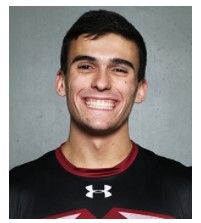

Resume
EDUCATION
Rose-Hulman Institute of Technology, Terre Haute, IN May 2021
Bachelor of Science in Computer Engineering Cumulative GPA: 3.41/4.0
Minor in Computer Science Minor GPA: 3.58/4.0
Related Courses: Computer Architecture, Data Structures and Algorithm Analysis, Circuits and Systems
SKILLS
- Programming Languages Experienced with Java, C/C++/C#, R, and Python
- Hardware Construction/ Languages Proficient at soldering and wiring, practiced with Assembly and Verilog
- Hardware Simulation Familiar with PSpice, Multisim, Xilinx
- AutoCAD Inventor Comfortable designing drawings and models in 2D and 3D
- Data Structures and Algorithms Maps, Lists, Stacks, Queues, Heaps and Trees, Merge Sort, Quick Sort, etc.
- Microsoft Office Skilled in Word, PowerPoint, Excel, Outlook, Visio, and Visual Studio
EXPERIENCE
Rose-Hulman Institute of Technology, Terre Haute, IN November – February 2020
Computer Engineering Group Project for Computer Architecture Created a multicycle stack architecture computer processor from scratch
Fabricated unique components for a handmade data path to process an original instruction set
Programmed in Verilog and tested running multiple example programs including Euclid’s Algorithm
Astrobotic and Carnegie Mellon University, Pittsburgh, PA May – Aug. 2019
Computer Engineering Internship, Testing: Research and Design Constructed new electrical hardware for lunar wheel tester ‘Carousel’
Designed effective Arduino user interface program
Upgraded motor control to have varying speeds and multidirectional motion
Developed testing for battery capacity under various environments (hot, cold, vacuum, etc.)
Collins Aerospace, Cedar Rapids, IA June – Nov. 2018
Co-Op (Software / Systems Engineering: Test and Training Instrumentation) Responsible for converting dozens of C# files into Python test programs
Accountable for developing Python test scripts based on documentation of system requirements
Accomplished long term individual and team project goals
Winchester Thurston School, Pittsburgh, PA Aug. 2014 – May 2017
Computer Science/ Engineering Research and Design Individual Project Researched and designed a wireless lower body measurement device
Invented project to aid physical therapy, rehabilitation, and athletics
Constructed 10 final components with Autodesk Inventor after over 20 prototype iterations
Assembled device with microcomputers, and 8 gyroscopes and accelerometers
ACTIVITIES
Rose-Hulman Army Reserve Officer Training Corps (ROTC), Platoon Sergeant, Contracted CadetRose-Hulman Men’s Varsity Indoor & Outdoor Track & Field, Team Member
Rose-Hulman Club Ultimate Frisbee and Intermural Frisbee, Team Member and Captain (respectively)
Proficiency in Hebrew, University of Wisconsin (GPA: 4.0/4.0)